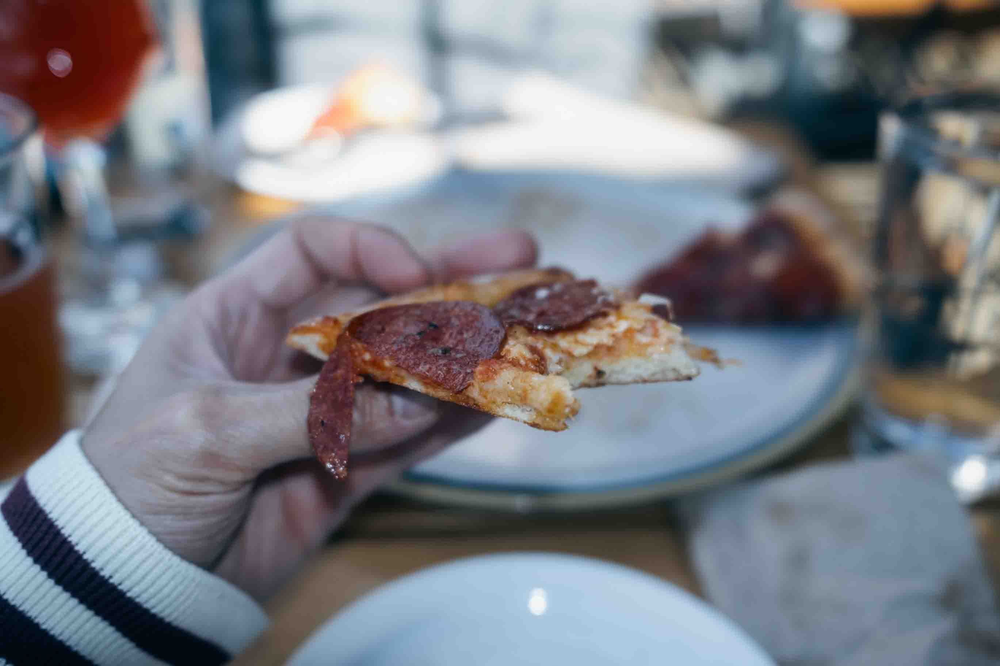
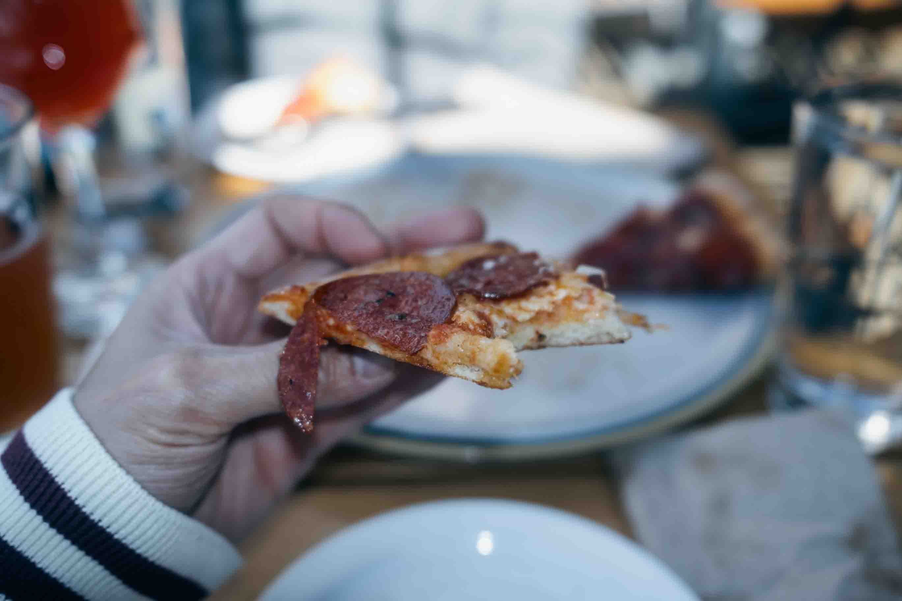

Jeff was in town last week for a wedding so we had a chance to catch up. We went to check out this really cool restaurant called Bar Tartar in Gastown. The idea behind this spot is that they have rotating chefs that come in and create feature menus for a limited time. This time around, Jeff treated me to some pork, hand made pasta noodles, and vegetables. They were small tapas, but really tasty. Honestly it was pretty expensive, but definitely worth the experience if you are a food lover.


Afterwards, we went to Guilt and Co again (which is quickly becoming one of my favorite spots here in the city). I spilled a beer all over Jeff while trying to get a piece of beef jerky, so that was one way to start the experience. Later on in the night, we walked down Granville St and as is tradition for my blog, got a pizza from Firecrust before heading home. I also learned that my Fuji X100 camera really likes to default to 12800 ISO when set on automatic, even when using the built in flash, so that was a lesson learned to manually set that as these photos look pretty rough!

Because Kat is in town, we took a trip down to the beach for a walk and a quick bite to eat. It's a shame I haven't been down here more, as I actually live really close to the beach. Life's been kinda busy with school and work, but I really should make an effort to get down there more. Our first stop was to go to Craft for a round of drinks and more pizza. To our pleasant surprise, Craft has happy hour all day on Sunday! Cheap eats and drinks are a necessity while I'm school so I may need to come back here often.
 

Next we went down to the beach for a walk. While it was sunny, it was actually pretty cold. But it wasn't hard to be inspired to take some street photography here. As I mentioned before, I've been really busy and haven't had a lot of time to actually get out here and be creative with my camera. I hope to change that soon, as I'm starting to get more comfortable being a here in my new home. Stay tuned for more!


Finally! The first long weekend since the start of school! Kat joined me in Vancouver from Edmonton over the weekend, and I finally got a day off of work to enjoy the city a little. We started off with some shopping over in Richmond, and I picked up a Super Puff jacket that is rated up to -30°C. Hopefully I won't be needing that here, but so far it's actually been a little colder here then it has been back in Edmonton. I guess in Vancouver, the temperature is more moderate throughout the whole year unlike the big swing from hot to cold back at home. Mid way through our shopping we stopped by Japadog to try some of their hot dogs. I had actually walked by this restaurant multiple times in the past and always wanted to try it. It was a good snack, and gets a recommenation from me!


After shopping we decided to do something a little more unique and headed by train down to Gastown for some live music and dinner. We managed to get to the restaurant before the end of happy hour, so we got a round of tacos and a mushroom pizza, along with a couple pints of local beer. Ryland Moranz played a set while we ate dinner, who is from Alberta! After dinner, it was back home to drop off our shopping and we ended up just crashing for the night.